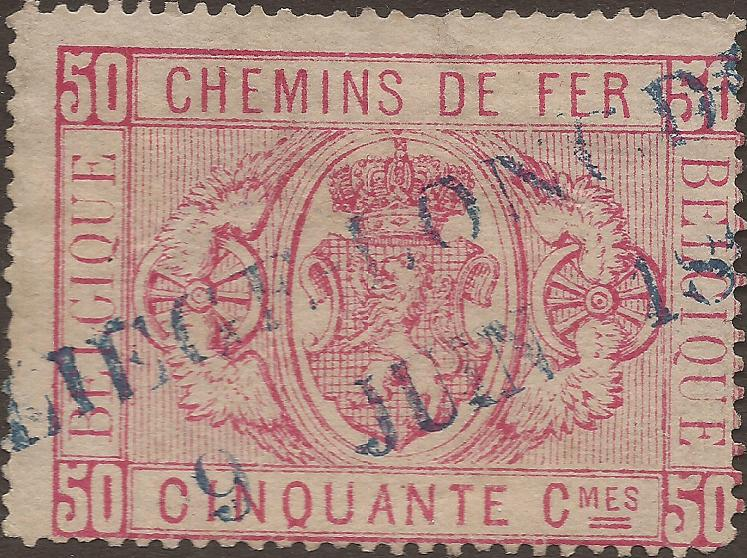
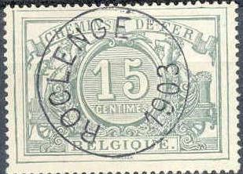
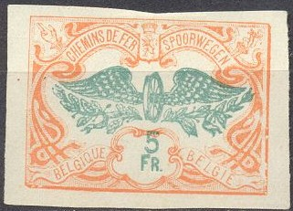
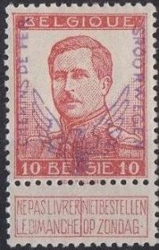

Return To Catalogue - Belgium - Belgium Railway official stamps
Note: on my website many of the
pictures can not be seen! They are of course present in the
catalogue;
contact me if you want to purchase it.
10 c brown 20 c blue 25 c green 50 c red 80 c yellow 1 F grey
Value of the stamps |
|||
vc = very common c = common * = not so common ** = uncommon |
*** = very uncommon R = rare RR = very rare RRR = extremely rare |
||
| Value | Unused | Used | Remarks |
| 10 c | *** | * | |
| 20 c | *** | ** | |
| 25 c | *** | ** | |
| 50 c | R | * | |
| 80 c | RR | ** | |
| 1 F | *** | * | |


10 c brown 15 c grey 20 c blue 25 c green 50 c red 80 c yellow 1 F brown 2 F yellow
Value of the stamps |
|||
vc = very common c = common * = not so common ** = uncommon |
*** = very uncommon R = rare RR = very rare RRR = extremely rare |
||
| Value | Unused | Used | Remarks |
| 10 c | * | * | |
| 15 c | ** | ** | |
| 20 c | *** | * | |
| 25 c | *** | ** | |
| 50 c | *** | vc | |
| 80 c | *** | c | |
| 1 F | *** | * | |
| 2 F | *** | *** | |
Forgeries of these stamps exist (made in 1925, sometimes referred to as reprints). Genuine stamps sometimes show part of a watermark, the forgeries never do. The genuine stamps are perforated 15 1/2 x 14 1/2. The forgeries have different perforation (14 or 11, according to 'Focus on forgeries') or are imperforate. The colours shades of the forgeries can be quite different from the genuine stamps. Forged postmarks exist on these forgeries, for example, I think the postmark "CUREGHEL 14 AOUT 1894" is forged.
Forged railway stamps.



Forgeries with wrong perforation.

10 c brown and black 15 c grey and black 20 c blue and black 25 c green and black 30 c orange and black 40 c blue and black 50 c red and black 60 c violet and black 70 c blue and black 80 c yellow and black 90 c red and black 1 F lilac and black 2 F yellow and black
Value of the stamps |
|||
vc = very common c = common * = not so common ** = uncommon |
*** = very uncommon R = rare RR = very rare RRR = extremely rare |
||
| Value | Unused | Used | Remarks |
| 10 c | * | c | |
| 15 c | ** | * | |
| 20 c | * | c | |
| 25 c | * | c | |
| 30 c | * | c | 1902 |
| 40 c | * | c | 1902 |
| 50 c | ** | vc | |
| 60 c | ** | vc | |
| 70 c | ** | c | 1902 |
| 80 c | ** | vc | |
| 1 F | *** | c | |
| 2 F | *** | * | |

10 c brown and grey 15 c grey and violet 20 c blue and brown 25 c green and red 30 c orange and green 35 c yellow and green (1912) 40 c blue and violet 50 c red and violet 55 c brown and blue (1912) 60 c lilac and red 70 c blue and red 80 c yellow and lilac 90 c red and green
Value of the stamps |
|||
vc = very common c = common * = not so common ** = uncommon |
*** = very uncommon R = rare RR = very rare RRR = extremely rare |
||
| Value | Unused | Used | Remarks |
| 10 c | vc | vc | |
| 15 c | vc | c | |
| 20 c | vc | vc | |
| 25 c | vc | vc | |
| 30 c | vc | vc | |
| 35 c | vc | c | |
| 40 c | vc | vc | |
| 50 c | vc | vc | |
| 55 c | vc | c | |
| 60 c | vc | vc | |
| 70 c | vc | vc | |
| 80 c | vc | vc | |
| 90 c | vc | vc | |
1 F lilac and orange 1 F 10 red and grey 2 F yellow and green 3 F black and blue 4 F green and red (1912) 5 F orange and green (1912) 10 F brown and lilac (1912)
Value of the stamps |
|||
vc = very common c = common * = not so common ** = uncommon |
*** = very uncommon R = rare RR = very rare RRR = extremely rare |
||
| Value | Unused | Used | Remarks |
| 1 F | vc | vc | |
| 1.10 F | vc | vc | |
| 2 F | vc | vc | |
| 3 F | c | c | |
| 4 F | * | * | |
| 5 F | c | c | |
| 10 F | c | c | |
Reprints exist (also imperforate or with forged postmarks).

(Reduced size, genuine)
(Genuine 5 c and 10 c; only 700 printed of each value!)

Genuine stamp, image obtained from a Siegel auction.
More genuine stamps.
5 c green 10 c red 20 c olive 25 c blue 35 c brown 40 c green 50 c grey 1 F orange 2 F violet 5 F brown
Value of the stamps |
|||
vc = very common c = common * = not so common ** = uncommon |
*** = very uncommon R = rare RR = very rare RRR = extremely rare |
||
| Value | Unused | Used | Remarks |
| All values | R to RRR | R to RRR | |
This set of stamps became necessary, since the railway stamps of 1902 were stolen by the Germans who resold them for 2 Francs per set (while the nominal value was 31.90 Francs). New stamps that were ordered from Waterloo had not arrived yet and this provisional issue became necessary.
All these overprints are rare. Forged overprints exist, example:
The wings of this overprint are straight, the genuine wings are
slightly curved upwards. Also, the left wing (from our
perspective) has a break in the upper line about 2/3 up in the
genuine stamps, which is missing here.


Highly suspicious overprint.


10 c blue
15 c olive
20 c red
25 c brown
30 c lilac
35 c grey
40 c yellow
50 c brown
55 c brown
60 c violet
70 c green
80 c brown
90 c blue
1 F grey
1.10 F blue ('FRANKEN' or 'FRANK')
2 F red
3 F lilac
4 F green
5 F brown
10 F orange
Value of the stamps |
|||
vc = very common c = common * = not so common ** = uncommon |
*** = very uncommon R = rare RR = very rare RRR = extremely rare |
||
| Value | Unused | Used | Remarks |
| 10 c | c | c | |
| 15 c | * | c | |
| 20 c | * | * | |
| 25 c | * | c | |
| 30 c | c | c | |
| 35 c | c | c | |
| 40 c | c | c | |
| 50 c | * | c | |
| 55 c | * | c | |
| 60 c | * | c | |
| 70 c | * | c | |
| 80 c | * | c | |
| 90 c | * | c | |
| 1 F | * | c | |
| 1.10 F | ** | ** | Francs/Franken |
| 1.10 F | * | c | Franc/Frank |
| 2 F | ** | c | |
| 3 F | ** | c | |
| 4 F | ** | c | |
| 5 F | ** | c | |
| 10 F | *** | c | |
10 c blue 10 c red 15 c olive 15 c green 20 c red 20 c green 25 c brown 25 c blue 30 c lilac 30 c brown 35 c grey 35 c brown 40 c yellow 50 c brown 50 c red 55 c brown 55 c yellow 60 c violet 60 c red 70 c green 80 c brown 80 c violet 90 c blue 90 c yellow 90 c red 1 F grey 1 F orange 1.10 F blue 1.20 F green 1.20 F orange 1.40 F brown 1.40 F yellow 1.60 F green 2 F red 3 F lilac 3 F red 4 F green 5 F brown 5 F violet 10 F orange 10 F yellow 10 F brown 15 F red 20 F blue

2 F black 3 F brown 4 F green 5 F lilac 10 F brown 15 F red 20 F blue
Many values in two different designs were issued. In 1928 they were overprinted "JOURNAUX DAGBLADEN 1928" (see images above). In 1929 the overprint "JOURNAUX DAGBLADEN" was used (without "1928"). These stamps also exist with overprint "BAGAGES REISGOED" (luggage, 1936). This "BAGAGES REISGOED" overprint is known to have been forged. The 50 F above, for example, has different tops of the "G"s and the bottom of the "R" is also different, it might be a forged overprint.
Without any overprint 0.05 F red-brown (1923) 0.10 F orange (1923) 0.10 F olive (1941) 0.15 F blue (1923) 0.20 F green (1923) 0.20 F violet (1941) 0.30 F lilac (1927) 0.30 F red (1941) 0.40 F olive (1923) 0.40 F blue (1941) 0.50 F lilac (1927) 0.50 F green (1941) 0.60 F orange (1923) 0.60 F black (1941) 0.70 F brown (1924) 0.70 F green (1941) 0.80 F violet (1923) 0.80 F orange (1941) 0.90 F grey (1927) 0.90 F lilac (1941) Other design (no overprint) 1.00 F blue (1923) 1.00 F green (1941) 1.10 F orange (1923) 1.50 F green (1923) 1.70 F red-brown (1931) 1.80 F lilac (1923) 2.00 F olive (1923) 2.00 F brown (1941) 2.10 F green (1923) 2.40 F violet (1923) 2.70 F grey (1923) 3.00 F red (1923) 3.00 F grey (1941) 3.30 F brown (1923) 4.00 F red (1924) 4.00 F olive (1941) 5.00 F violet (1924) 5.00 F brown (1940) 5.00 F lilac (1941) 5.00 F black (1941) 6.00 F brown (1927) 6.00 F red (1941) 7.00 F orange (1927) 7.00 F violet (1941) 8.00 F brown (1927) 8.00 F green (1941) 9.00 F lilac (1927) 9.00 F blue (1941) 10.00 F green (1927) 10.00 F grey (1940) 10.00 F red (1941) 20.00 F lilac (1927) 20.00 F light blue (1941) 30.00 F blue (1931) 30.00 F orange (1941) 40.00 F grey (1931) 40.00 F red (1941) 50.00 F yellow (1927) 50.00 F lilac (1941) Surcharged '2F30' (green) on 2.40 F violet (1924, exists with inverted surcharge) Overprinted with 'B' in an ellipse (1940) 0.10 F red (blue overprint) 0.20 F green (red overprint) 0.30 F lilac (blue overprint) 0.40 F olive (red overprint) 0.50 F lilac (blue overprint) 0.60 F orange (blue overprint) 0.70 F brown (blue overprint) 0.80 F violet (red overprint) 0.90 F grey (red overprint) 1.00 F blue (red overprint) 2.00 F olive (red overprint) 3.00 F red (blue overprint) 4.00 F red (blue overprint) 5.00 F violet (red overprint) 6.00 F brown (blue overprint) 7.00 F orange (blue overprint) 8.00 F brown (blue overprint) 9.00 F lilac (blue overprint) 10 F green (red overprint) 20 F lilac (blue overprint) 30 F green (red overprint) 40 F grey (red overprint) 50 F yellow (blue overprint)

3 F green 4 F lilac 5 F red
0.10 F red 0.20 F violet 0.30 F brown 0.40 F dark blue 0.50 F orange 0.60 F green 0.70 F blue 0.80 F black 0.90 F red

1 F lilac 2 F black 3 F orange 4 F violet 5 F lilac 6 F green 7 F violet 8 F olive 9 F blue 10 F red 20 F green 30 F violet 40 F brown 50 F red 100 F blue
The 5 F stamp exists with overprint "BAGAGES REISGOED" (luggage stamps, 1936).
'M 3 Fr' (blue) on 5.50 F red (1939) '5 Fr' (red) on 3.50 F green '5 Fr' (blue) on 4.50 F lilac '6 Fr' (blue) on 5.50 F red '8 F' (red) on 5.50 F brown (1946) '10 F' (red) on 5.50 F blue (1946) '12 F' (red) on 5.50 F violet (1946)
Unsurcharged stamps were prepared, but not issued.

20 c brown 50 c blue 2 F red 9 F green 10 F lilac
10 c black (1946) 20 c violet (1945) 30 c brown (1946) 40 c blue (1946) 50 c blue (1945) 60 c black (1946) 70 c green (1946) 80 c orange (1945) 90 c lilac (1946) 1 F green (1946) 2 F black (1945) 3 F black (1946) 4 F blue (1945) 5 F brown (1945) 5 F black (not issued) 6 F green (1946) 7 F violet (1946) 8 F red (1945) 9 F blue (1946) 9.20 F orange (1942) 10 F red (1946) 10 F black (1946) 12.30 F green (1942) 14.50 F lilac (1942) 20 F green (1946) 30 F violet (1945) 40 F red (1945) 50 F blue (1946)
Many stamps of this issue exist imperforate.
100 F blue (exists imperforate)

Inscription 'BELGIE BELGIQUE' 3 F green (1946) 5 F blue 6 F red Inscription 'BELGIQUE BELGIE' 3 F green (1946) 5 F blue 6 F red
These stamps exist imperforate.

8 F brown 10 F grey and blue 12 F violet Surcharged (1947) '= 9F =' (red) on 8 F brown '= 11F =' (red) on 10 F grey and blue '= 13.50F =' (red) on 12 F violet
100 F green

9 F brown 11 F red 13.50 F grey
1/2 F brown ('LE BELGE' 1835)
1 F red (1852 T1)
2 F blue (1875 T29)
3 F red (1884 T25)
4 F grey (1901 T18)
5 F orange (1902 T22)
6 F lilac (1904 T53)
7 F green (1905 T8)
8 F blue (1906 T16)
9 F brown (1909 T10)
10 F red and black (1905 T41)
10 F olive (1910 T36)
20 F orange (1920 T38)
30 F blue (1928 T46)
40 F red (1930 T5)
50 F violet (1935 T1)
60 F brown (1949 T101 electric train)
100 F red (1939 T12)
300 F lilac (1952, electric train)
11 F orange 12 F lilac 13 F green 15 F blue 16 F grey 17 F brown 18 F red 20 F light brown Surcharged (1953) '13 F.' (red) on 15 F blue '17 F.' (red) on 11 F orange '20 F.' (green) on 18 F red
25 F grey
200 F green
21 values ranging from 1 F to 300 F were issued
1 F light brown 2 F green 3 F green 4 F orange 5 F brown 5 F brown (different design) 6 F violet 7 F green 8 F red 9 F blue 10 F green 10 F black 15 F red 20 F blue 20 F green 20 F green (Brussels station, 1957) 30 F lilac 40 F lilac 50 F lilac 50 F blue 60 F lilac 80 F brown 100 F green 200 F blue 300 F lilac Surcharged '24 F' (red) on 20 F green (1961)
13 F brown 18 F blue 21 F lilac Surcharged '14 F' (blue) on 13 F brown '19 F' (red) on 18 F blue '22 F' (green) on 21 F lilac
14 F green 19 F olive 22 F red Surcharged (1959) '20 F X' (red) on 19 F olive '20 F X' on 22 F red
20 F red 50 F blue 60 F lilac 70 F green
24 F brown (old Brussels station) 26 F blue (Antwerp station, 1963) 25 F brown (Arlon station, 1967) 28 F lilac (Ghent station, 1965) 30 F green (design as 25 F, 1967) 32 F light brown and black (Ostende station, 1971) 35 F blue (design as 25 F, 1967) 37 F black (design as 32 F, 1971) 40 F red (design as 25 F, 1968) 42 F blue and black (design as 32 F, 1971) 44 F red and black (design as 32 F, 1971) 46 F violet and black (design as 32 F, 1971) 50 F red and black (design as 32 F, 1971) 52 F brown and black (design as 32 F, 1971) 54 F green and black (design as 32 F, 1971) 61 F blue and black (design as 32 F, 1971) Surcharged '26 F' (green) on 24 F brown '28 F' (red) on 26 F blue '34 F' on 32 F light brown and black (design as 32 F, 1971) '35 F' (green) on 28 F lilac '37 F' on 25 F brown (1970) '40 F' on 37 F black (design as 32 F, 1971) '47 F' on 44 F red and black (design as 32 F, 1971) '48 F' on 35 F blue (1970) '53 F' on 40 F red (1970) '53 F' on 42 F blue and black (design as 32 F, 1971) '56 F' on 52 F brown and black (design as 32 F, 1971) '59 F' on 54 F green and black (design as 32 F, 1971) '66 F' on 61 F blue and black (design as 32 F, 1971)
Electric train moving from left to right 1 F light brown 2 F black 3 F blue 4 F orange 5 F brown 6 F lilac 7 F green 8 F red 9 F light blue Electric train moving from left to right 10 F green 20 F blue 30 F violet 40 F lilac Electric train moving from right to left 50 F lilac 60 F violet 70 F light brown (1970) 80 F brown 90 F green (1973) Diesel train moving from left to right 100 F light green 200 F violet 300 F red Train in station 500 F yellow
100 F green and red
100 F yellow and red
20 F blue and lilac 50 F green and light blue 100 F red and orange 150 F violet and lilac
250 F 500 F 1000 F
General goods carriage 1 F yellow and black 2 F red and black 3 F blue and black 4 F black 5 F brown and black 6 F orange and black 7 F violet and black 8 F black 9 F light blue and black Special goods carriage 10 F light brown and black 20 F blue and black 30 F yellow and black 40 F lilac and black Bulk goods carriage 50 F lilac and black 60 F olive and black 70 F blue and black 80 F lilac and black 90 F red and black Chemical goods carriage 100 F red and black 200 F brown and black 300 F green and black 500 F lilac and black


{kind=link}
{kind=link}
{kind=link}
{kind=link}